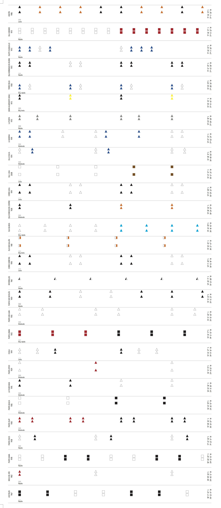

ESPAÑOL
ESPAÑOL
 ENGLISH
ENGLISH
ENGLISH

Todos los faros de la costa peruana forma parte del proyecto Irradia, una iniciativa conjunta del MALI y la Fundación Telefónica Movistar para promover la utilización de los medios de producción digital como estímulo para la creación artística.
1
PRESENTACIÓN
PRESENTACIÓN
Todos los faros de la costa peruana es un proyecto multidisciplinar que explora las relaciones entre navegación, sonido y escritura.
Los faros son señales encadenadas en el litoral. Cada uno de ellos posee un código propio, simple pero efectivo, cuya función es orientar a los navegantes. La guía acontece en horas de día como en el lapso de noche. En la claridad los faros se diferencian unos de otros por su apariencia física; en la oscuridad se identifican por su tipo de luz. A partir de las características lumínicas y estructurales de los 56 faros desplegados a lo largo de los 3,000 kilómetros del litoral peruano, he desarrollado una partitura gráfica para ser interpretada libremente por diversos músicos.
Los códigos individuales de los faros resultan en variaciones que, en sucesión, evocan las peculiaridades físico-geográficas existentes en el territorio de la costa peruana. Si la costa es una línea plagada de faros, la partitura es una concatenación de gráficos, marcas e instrucciones que devuelve a esos faros como fuente sin postularse como su traducción. Sobre la base de datos mensurables y filocientíficos, Todos los faros de la costa peruana presenta una partitura de notaciones abiertas que asume la indeterminación propia de la música experimental.
Como parte del programa público de este proyecto he invitado a distintos autores a producir, en cada caso, un texto inspirado en un concepto específico del lenguaje de la navegación. Se trata de tomar términos vinculados a un marco instructivo que, descontextualizados, se prestan para múltiples derivas poéticas e interpretativas.
Navegación, sonido y escritura conforman así una red de sistemas notacionales generativos susceptibles de retroalimentarse y desviarse mutuamente.
Luz María Bedoya
Enero, 2021
- Teresa Cabrera
- Macri Cáceres
- Lucia Castello Branco
- Orieta Chrem
- Vered Engelhard
- Gabriela Ezeta
- Safaa Fathy
- Teté Leguía
- José Ignacio Padilla
- Santiago Pillado
- Paruro
- Peter Szsendy
- Santiago Vera
Todos los faros de la costa peruana forma parte del proyecto Irradia, una iniciativa conjunta del MALI y la Fundación Telefónica Movistar para promover la utilización de los medios de producción digital como estímulo para la creación artística.
 2
2
FAROS
FAROS
Actualmente la costa del Perú está puntuada por 56 faros construidos entre 1928 y 2008. Sus nombres y características son determinados por la Dirección de Hidrografía y Navegación peruana y están detallados en la publicación Lista de faros y señales náuticas.
01 PUNTA CAPONES
Punta Capones, Tumbes

01 PUNTA CAPONES
Punta Capones, Tumbes
01 PUNTA CAPONES
Punta Capones, Tumbes
Todos los faros de la costa peruana forma parte del proyecto Irradia, una iniciativa conjunta del MALI y la Fundación Telefónica Movistar para promover la utilización de los medios de producción digital como estímulo para la creación artística.
3
NAVEGACIÓN
NAVEGACIÓN
Cada uno de los 56 faros de la costa peruana posee características físicas y operativas singulares: colores y diseño de la torre, altura focal, periodo lumínico, intensidad y alcance visual. Estas características han sido recodificadas para componer una partitura gráfica de 56 módulos. Según un sistema de correspondencias que transitan del cálculo a la indeterminación se busca delinear parámetros musicales de interpretación abierta.


Cada uno de los 56 faros de la costa peruana posee características físicas y operativas singulares: colores y diseño de la torre, altura focal, periodo lumínico, intensidad y alcance visual. Estas características han sido recodificadas para componer una partitura gráfica de 56 módulos. Según un sistema de correspondencias que transitan del cálculo a la indeterminación se busca delinear parámetros musicales de interpretación abierta.
VOLUMEN
La altura focal de un faro se indica en metros sobre el nivel del mar y corresponde a la distancia vertical entre el nivel del terreno y la parte superior de la estructura luminosa. En la partitura la altura focal ha sido transformada en el tempo de interpretación. Los faros con menor altura focal se interpretan con un tempo más rápido, los faros con mayor altura focal se interpretan con un tempo más lento.
TEMPO
 Idea sonora larga
Idea sonora larga
El periodo de un faro es una secuencia medida en segundos que alterna destellos de luz (L.) y momentos de eclipse (Ecl.). En la partitura el periodo se ha transformado en ritmo y se expresa en la alternancia de las ideas sonoras y los intervalos de silencio que les siguen. La duración de los destellos de luz sugiere la extensión de las ideas sonoras. Los espacios en blanco entre las ideas sonoras responden a los tiempos de eclipse y señalan los silencios en la partitura.
RITMO
Periodo 15 segundos
3 destellos
L. 05 -- Ecl. 1.5
L. 05 -- Ecl. 1.5
L. 05 -- Ecl. 1.5
Periodo 10 segundos
1 destello
L. 05 -- Ecl. 1.5
Periodo 15 segundos
3 destellos
L. 05 -- Ecl. 1.5
L. 05 -- Ecl. 1.5
L. 05 -- Ecl. 1.5
Periodo 10 segundos
1 destello
L. 05 -- Ecl. 1.5


Todos los faros cuentan con dos tipos de alcances estimados en millas náuticas: un alcance nominal y un alcance geográfico. El alcance nominal corresponde a la distancia máxima dentro de la cual la luminosidad de un faro es perceptible en una atmósfera homogénea. El alcance geográfico indica la distancia máxima de visibilidad de un faro durante el día y está sujeto a la configuración y las interrupciones del terreno así como a las alturas relativas del observador y el faro. Los alcances de los faros dan lugar a los tonos de las ideas sonoras. Por lo general cada módulo incorpora la notación de las ideas sonoras duplicadas en dos niveles para evocar los dos tipos de alcances. Un módulo presentará las ideas sonoras desplegadas en un solo nivel cuando los alcances nominal y geográfico del faro correspondiente coincidan.
TONO
Los colores de las ideas sonoras coinciden en cada módulo con los colores de la torre del faro al que aluden. Los colores marcan el carácter de la interpretación. Cada intérprete define a voluntad el carácter propio de cada color en la partitura.
CARÁCTER


Todos los faros de la costa peruana forma parte del proyecto Irradia, una iniciativa conjunta del MALI y la Fundación Telefónica Movistar para promover la utilización de los medios de producción digital como estímulo para la creación artística.
 4
4
PARTITURA
PARTITURA
Todos los faros de la costa peruana es una partitura gráfica modular compuesta por 56 secciones. Las notaciones de cada módulo tienen como origen las características lumínicas y estructurales de los 56 faros del litoral.
Invitados
1. Para cualquier objeto, instrumento o voz.
2. Antes de empezar la pieza, el intérprete tiene la libertad de elegir una combinación de dos sonidos simultáneos a la que podrá volver en cualquier punto de la pieza si es que lo desea.
3. La interpretación de esta partitura puede comenzar por cualquiera de los módulos, descartar uno o varios, o repetir algún otro a voluntad. También puede interpretarse varios o todos ellos de manera simultánea.
4. En cada módulo se despliegan ideas sonoras seguidas por silencios:
Ideas sonoras pueden ser sonidos limpios de un instrumento o voz, o también alguna configuración de sonidos. Se ha empleado el nombre “ideas sonoras”, y no la palabra “sonidos”, para subrayar que se trata de configuraciones —mezclas, ruidos— y no solamente de notas musicales.
Los silencios están indicados por el espacio en blanco inmediatamente consecutivo a las ideas sonoras.
5. Los colores marcan cambios de carácter y/o de técnica a libre elección.
6. La posición de las ideas sonoras define su altura tonal. Si se ubican en la parte superior del módulo, se espera que sean más agudas. Sucede lo inverso si se ubican en la parte inferior, cuando deben ser más graves. Por lo general cada módulo incorpora la notación de las ideas sonoras duplicadas en dos niveles. Durante la interpretación estas pueden alternarse y combinarse; también puede elegirse emplear una u otra indistintamente.
7. El volumen está indicado por líneas cortas ubicadas al inicio de cada módulo:
Es opcional sostener el volumen indicado al inicio de cada módulo o reducirlo paulatinamente conforme se acerca el final.
8. El tempo está señalado al inicio de cada módulo. Existen cinco velocidades: muy lento, lento, moderado, rápido, muy rápido.
9. La duración total de la pieza es libre.
Descarga la partitura 
Todos los faros de la costa peruana forma parte del proyecto Irradia, una iniciativa conjunta del MALI y la Fundación Telefónica Movistar para promover la utilización de los medios de producción digital como estímulo para la creación artística.
5
INTERPRETACIONES
INTERPRETACIONES
Diversos artistas han sido invitados para interpretar la partitura Todos los faros de la costa peruana. Desde marzo de 2020 ellos vienen explorando las posibilidades sonoras de estas notaciones para desarrollar las piezas experimentales presentadas acá.
El conjunto de estas interpretaciones reúne la improvisación vocal, la electrónica ruidista, el paisaje sonoro, el mapeo performático del cuerpo, e incluye exploraciones con múltiples instrumentos y objetos: contrabajo, flauta, batería, pututo, aguáfono, steel drum, cuencos de cuarzo, osciladores, piedras, campanas, entre otros.
Programa de publicación
13.12.21 Gabriela Ezeta
13.12.21 Tete Leguia
13.12.21 Vered Engelhard
13.12.21 Santiago Pillado
13.12.21 Macri Caceres
13.12.21 Paruro
13.12.21 Orieta Chrem
Accede al playlist en SpotifyGABRIELA EZETA
Interpretación vocal
Gabriela Ezeta
Grabación, edición y mezcla binaural
Orieta Chrem
Dirección
Luz María Bedoya

Esta pieza fue grabada entre marzo y noviembre de 2020 en días previos a la cuarentena impuesta en el Perú a causa del Covid 19 y durante los meses posteriores al periodo de confinamiento estricto. Inicialmente fue concebida como una composición sonora multicanal, para ser reproducida y escuchada a través de un sistema de 8 parlantes en el interior de un recinto oscurecido, que habría de estar ubicado en el vestíbulo del MALI. Motivos de seguridad sanitaria llevaron a desarrollar la pieza en sonido binaural para ser accedida desde plataformas digitales como la que aquí se presenta. Gabriela Ezeta improvisó exploraciones vocales siguiendo las instrucciones y notaciones gráficas de los 56 módulos de la partitura, las que luego de grabadas fueron combinadas y enlazadas en la mezcla realizada por Orieta Chrem. Los registros vocales fueron editados siguiendo un procedimiento de montaje. Esta ejecución de Todos los faros de la costa peruana reordena el encadenamiento modular Norte-Sur de la partitura; en sus 11 minutos 40 segundos de duración conserva la extensión original de las interpretaciones de cada uno de los 56 módulos sin repetir la aparición de ninguno de ellos.
Gabriela Ezeta estudió la carrera de Comunicaciones y luego ingresó a la especialidad de canto clásico en la Escuela Nacional de Música en Lima. Abandonó la Escuela para incursionar en el jazz y en la experimentación vocal, participando en diversos talleres: Roy Hart Teatro de la Voz, Entrenamiento Rítmico con Douglas Tarnawiecki, Voz con Pilar Nuñez del Grupo Cuatrotablas, Entrenamiento Rítmico con Jorge Madueño Romero, Improvisación en Jazz con Martin Joseph (ENM), y Ritmo con Victoria Santa Cruz. Ha realizado conciertos personales y colaboraciones con distintos artistas del medio.
TETÉ ENGELHARD
Interpretación vocal
Gabriela Ezeta
Grabación, edición y mezcla binaural
Orieta Chrem
Dirección
Luz María Bedoya
Esta pieza fue grabada entre marzo y noviembre de 2020 en días previos a la cuarentena impuesta en el Perú a causa del Covid 19 y durante los meses posteriores al periodo de confinamiento estricto. Inicialmente fue concebida como una composición sonora multicanal, para ser reproducida y escuchada a través de un sistema de 8 parlantes en el interior de un recinto oscurecido, que habría de estar ubicado en el vestíbulo del MALI. Motivos de seguridad sanitaria llevaron a desarrollar la pieza en sonido binaural para ser accedida desde plataformas digitales como la que aquí se presenta. Gabriela Ezeta improvisó exploraciones vocales siguiendo las instrucciones y notaciones gráficas de los 56 módulos de la partitura, las que luego de grabadas fueron combinadas y enlazadas en la mezcla realizada por Orieta Chrem. Los registros vocales fueron editados siguiendo un procedimiento de montaje. Esta ejecución de Todos los faros de la costa peruana reordena el encadenamiento modular Norte-Sur de la partitura; en sus 11 minutos 40 segundos de duración conserva la extensión original de las interpretaciones de cada uno de los 56 módulos sin repetir la aparición de ninguno de ellos.
Gabriela Ezeta estudió la carrera de Comunicaciones y luego ingresó a la especialidad de canto clásico en la Escuela Nacional de Música en Lima. Abandonó la Escuela para incursionar en el jazz y en la experimentación vocal, participando en diversos talleres: Roy Hart Teatro de la Voz, Entrenamiento Rítmico con Douglas Tarnawiecki, Voz con Pilar Nuñez del Grupo Cuatrotablas, Entrenamiento Rítmico con Jorge Madueño Romero, Improvisación en Jazz con Martin Joseph (ENM), y Ritmo con Victoria Santa Cruz. Ha realizado conciertos personales y colaboraciones con distintos artistas del medio.
SANTIAGO PILLADO
Interpretación vocal
Gabriela Ezeta
Grabación, edición y mezcla binaural
Orieta Chrem
Dirección
Luz María Bedoya
Esta pieza fue grabada entre marzo y noviembre de 2020 en días previos a la cuarentena impuesta en el Perú a causa del Covid 19 y durante los meses posteriores al periodo de confinamiento estricto. Inicialmente fue concebida como una composición sonora multicanal, para ser reproducida y escuchada a través de un sistema de 8 parlantes en el interior de un recinto oscurecido, que habría de estar ubicado en el vestíbulo del MALI. Motivos de seguridad sanitaria llevaron a desarrollar la pieza en sonido binaural para ser accedida desde plataformas digitales como la que aquí se presenta. Gabriela Ezeta improvisó exploraciones vocales siguiendo las instrucciones y notaciones gráficas de los 56 módulos de la partitura, las que luego de grabadas fueron combinadas y enlazadas en la mezcla realizada por Orieta Chrem. Los registros vocales fueron editados siguiendo un procedimiento de montaje. Esta ejecución de Todos los faros de la costa peruana reordena el encadenamiento modular Norte-Sur de la partitura; en sus 11 minutos 40 segundos de duración conserva la extensión original de las interpretaciones de cada uno de los 56 módulos sin repetir la aparición de ninguno de ellos.
Gabriela Ezeta estudió la carrera de Comunicaciones y luego ingresó a la especialidad de canto clásico en la Escuela Nacional de Música en Lima. Abandonó la Escuela para incursionar en el jazz y en la experimentación vocal, participando en diversos talleres: Roy Hart Teatro de la Voz, Entrenamiento Rítmico con Douglas Tarnawiecki, Voz con Pilar Nuñez del Grupo Cuatrotablas, Entrenamiento Rítmico con Jorge Madueño Romero, Improvisación en Jazz con Martin Joseph (ENM), y Ritmo con Victoria Santa Cruz. Ha realizado conciertos personales y colaboraciones con distintos artistas del medio.
MACRI CÁCERES
Interpretación vocal
Gabriela Ezeta
Grabación, edición y mezcla binaural
Orieta Chrem
Dirección
Luz María Bedoya
Esta pieza fue grabada entre marzo y noviembre de 2020 en días previos a la cuarentena impuesta en el Perú a causa del Covid 19 y durante los meses posteriores al periodo de confinamiento estricto. Inicialmente fue concebida como una composición sonora multicanal, para ser reproducida y escuchada a través de un sistema de 8 parlantes en el interior de un recinto oscurecido, que habría de estar ubicado en el vestíbulo del MALI. Motivos de seguridad sanitaria llevaron a desarrollar la pieza en sonido binaural para ser accedida desde plataformas digitales como la que aquí se presenta. Gabriela Ezeta improvisó exploraciones vocales siguiendo las instrucciones y notaciones gráficas de los 56 módulos de la partitura, las que luego de grabadas fueron combinadas y enlazadas en la mezcla realizada por Orieta Chrem. Los registros vocales fueron editados siguiendo un procedimiento de montaje. Esta ejecución de Todos los faros de la costa peruana reordena el encadenamiento modular Norte-Sur de la partitura; en sus 11 minutos 40 segundos de duración conserva la extensión original de las interpretaciones de cada uno de los 56 módulos sin repetir la aparición de ninguno de ellos.
Gabriela Ezeta estudió la carrera de Comunicaciones y luego ingresó a la especialidad de canto clásico en la Escuela Nacional de Música en Lima. Abandonó la Escuela para incursionar en el jazz y en la experimentación vocal, participando en diversos talleres: Roy Hart Teatro de la Voz, Entrenamiento Rítmico con Douglas Tarnawiecki, Voz con Pilar Nuñez del Grupo Cuatrotablas, Entrenamiento Rítmico con Jorge Madueño Romero, Improvisación en Jazz con Martin Joseph (ENM), y Ritmo con Victoria Santa Cruz. Ha realizado conciertos personales y colaboraciones con distintos artistas del medio.
PARURO
Interpretación vocal
Gabriela Ezeta
Grabación, edición y mezcla binaural
Orieta Chrem
Dirección
Luz María Bedoya
Esta pieza fue grabada entre marzo y noviembre de 2020 en días previos a la cuarentena impuesta en el Perú a causa del Covid 19 y durante los meses posteriores al periodo de confinamiento estricto. Inicialmente fue concebida como una composición sonora multicanal, para ser reproducida y escuchada a través de un sistema de 8 parlantes en el interior de un recinto oscurecido, que habría de estar ubicado en el vestíbulo del MALI. Motivos de seguridad sanitaria llevaron a desarrollar la pieza en sonido binaural para ser accedida desde plataformas digitales como la que aquí se presenta. Gabriela Ezeta improvisó exploraciones vocales siguiendo las instrucciones y notaciones gráficas de los 56 módulos de la partitura, las que luego de grabadas fueron combinadas y enlazadas en la mezcla realizada por Orieta Chrem. Los registros vocales fueron editados siguiendo un procedimiento de montaje. Esta ejecución de Todos los faros de la costa peruana reordena el encadenamiento modular Norte-Sur de la partitura; en sus 11 minutos 40 segundos de duración conserva la extensión original de las interpretaciones de cada uno de los 56 módulos sin repetir la aparición de ninguno de ellos.
Gabriela Ezeta estudió la carrera de Comunicaciones y luego ingresó a la especialidad de canto clásico en la Escuela Nacional de Música en Lima. Abandonó la Escuela para incursionar en el jazz y en la experimentación vocal, participando en diversos talleres: Roy Hart Teatro de la Voz, Entrenamiento Rítmico con Douglas Tarnawiecki, Voz con Pilar Nuñez del Grupo Cuatrotablas, Entrenamiento Rítmico con Jorge Madueño Romero, Improvisación en Jazz con Martin Joseph (ENM), y Ritmo con Victoria Santa Cruz. Ha realizado conciertos personales y colaboraciones con distintos artistas del medio.
ORIETA CHREM
Interpretación vocal
Gabriela Ezeta
Grabación, edición y mezcla binaural
Orieta Chrem
Dirección
Luz María Bedoya
Esta pieza fue grabada entre marzo y noviembre de 2020 en días previos a la cuarentena impuesta en el Perú a causa del Covid 19 y durante los meses posteriores al periodo de confinamiento estricto. Inicialmente fue concebida como una composición sonora multicanal, para ser reproducida y escuchada a través de un sistema de 8 parlantes en el interior de un recinto oscurecido, que habría de estar ubicado en el vestíbulo del MALI. Motivos de seguridad sanitaria llevaron a desarrollar la pieza en sonido binaural para ser accedida desde plataformas digitales como la que aquí se presenta. Gabriela Ezeta improvisó exploraciones vocales siguiendo las instrucciones y notaciones gráficas de los 56 módulos de la partitura, las que luego de grabadas fueron combinadas y enlazadas en la mezcla realizada por Orieta Chrem. Los registros vocales fueron editados siguiendo un procedimiento de montaje. Esta ejecución de Todos los faros de la costa peruana reordena el encadenamiento modular Norte-Sur de la partitura; en sus 11 minutos 40 segundos de duración conserva la extensión original de las interpretaciones de cada uno de los 56 módulos sin repetir la aparición de ninguno de ellos.
Gabriela Ezeta estudió la carrera de Comunicaciones y luego ingresó a la especialidad de canto clásico en la Escuela Nacional de Música en Lima. Abandonó la Escuela para incursionar en el jazz y en la experimentación vocal, participando en diversos talleres: Roy Hart Teatro de la Voz, Entrenamiento Rítmico con Douglas Tarnawiecki, Voz con Pilar Nuñez del Grupo Cuatrotablas, Entrenamiento Rítmico con Jorge Madueño Romero, Improvisación en Jazz con Martin Joseph (ENM), y Ritmo con Victoria Santa Cruz. Ha realizado conciertos personales y colaboraciones con distintos artistas del medio.
Todos los faros de la costa peruana forma parte del proyecto Irradia, una iniciativa conjunta del MALI y la Fundación Telefónica Movistar para promover la utilización de los medios de producción digital como estímulo para la creación artística.
6
PODCASTS
PODCASTS
Como parte del programa público de Todos los faros de la costa peruana se invitó a distintos autores a formular diversas derivas, poéticas e interpretativas, desencadenadas a partir de conceptos específicos del lenguaje de la navegación.
Programa de publicación
13.12.21 linea de fe
13.12.21 Ángulo de inertidumbre
13.12.21 Trazado de la derrota
13.12.21 Compensación de los desvíos
13.12.21 Señal Ciega
13.12.21 Demora Verdadera
Accede al playlist en SpotifyLÍNEA DE FE
El compás magnético permite a los navegantes conocer el rumbo de una embarcación. Se trata de una pieza compuesta por una aguja imantada colocada sobre un disco ligero en donde se han acuñado los 360º del horizonte. La aguja y el disco se encuentran en el interior de un recipiente circular en cuyo borde se observa una pequeña marca llamada línea de fe.
Santiago Vera es un poeta peruano, autor de “Volúmenes silenciosos” (la Crema, 2012) y “Libro de las opiniones” (Paracaídas, 2014; Liliputienses, 2019). Ha culminado estudios de maestría en Filosofía en la Pontificia Universidad Católica del Perú y se especializa en temas de estética y filosofía del lenguaje. Es además miembro fundador de la plataforma de poesía e investigación Ánima Lisa y forma parte del equipo editorial de la revista de poesía y crítica Pesapalabra.
ÁNGULO DE INCERTIDUMBRE
El compás magnético permite a los navegantes conocer el rumbo de una embarcación. Se trata de una pieza compuesta por una aguja imantada colocada sobre un disco ligero en donde se han acuñado los 360º del horizonte. La aguja y el disco se encuentran en el interior de un recipiente circular en cuyo borde se observa una pequeña marca llamada línea de fe.
Santiago Vera es un poeta peruano, autor de “Volúmenes silenciosos” (la Crema, 2012) y “Libro de las opiniones” (Paracaídas, 2014; Liliputienses, 2019). Ha culminado estudios de maestría en Filosofía en la Pontificia Universidad Católica del Perú y se especializa en temas de estética y filosofía del lenguaje. Es además miembro fundador de la plataforma de poesía e investigación Ánima Lisa y forma parte del equipo editorial de la revista de poesía y crítica Pesapalabra.
TRAZADO DE LA DERROTA
El compás magnético permite a los navegantes conocer el rumbo de una embarcación. Se trata de una pieza compuesta por una aguja imantada colocada sobre un disco ligero en donde se han acuñado los 360º del horizonte. La aguja y el disco se encuentran en el interior de un recipiente circular en cuyo borde se observa una pequeña marca llamada línea de fe.
Santiago Vera es un poeta peruano, autor de “Volúmenes silenciosos” (la Crema, 2012) y “Libro de las opiniones” (Paracaídas, 2014; Liliputienses, 2019). Ha culminado estudios de maestría en Filosofía en la Pontificia Universidad Católica del Perú y se especializa en temas de estética y filosofía del lenguaje. Es además miembro fundador de la plataforma de poesía e investigación Ánima Lisa y forma parte del equipo editorial de la revista de poesía y crítica Pesapalabra.
COMPENSACIÓN DE LOS DESVÍOS
El compás magnético permite a los navegantes conocer el rumbo de una embarcación. Se trata de una pieza compuesta por una aguja imantada colocada sobre un disco ligero en donde se han acuñado los 360º del horizonte. La aguja y el disco se encuentran en el interior de un recipiente circular en cuyo borde se observa una pequeña marca llamada línea de fe.
Santiago Vera es un poeta peruano, autor de “Volúmenes silenciosos” (la Crema, 2012) y “Libro de las opiniones” (Paracaídas, 2014; Liliputienses, 2019). Ha culminado estudios de maestría en Filosofía en la Pontificia Universidad Católica del Perú y se especializa en temas de estética y filosofía del lenguaje. Es además miembro fundador de la plataforma de poesía e investigación Ánima Lisa y forma parte del equipo editorial de la revista de poesía y crítica Pesapalabra.
SEÑAL CIEGA
El compás magnético permite a los navegantes conocer el rumbo de una embarcación. Se trata de una pieza compuesta por una aguja imantada colocada sobre un disco ligero en donde se han acuñado los 360º del horizonte. La aguja y el disco se encuentran en el interior de un recipiente circular en cuyo borde se observa una pequeña marca llamada línea de fe.
Santiago Vera es un poeta peruano, autor de “Volúmenes silenciosos” (la Crema, 2012) y “Libro de las opiniones” (Paracaídas, 2014; Liliputienses, 2019). Ha culminado estudios de maestría en Filosofía en la Pontificia Universidad Católica del Perú y se especializa en temas de estética y filosofía del lenguaje. Es además miembro fundador de la plataforma de poesía e investigación Ánima Lisa y forma parte del equipo editorial de la revista de poesía y crítica Pesapalabra.
DEMORA VERDADERA
Esta pieza fue grabada entre marzo y noviembre de 2020 en días previos a la cuarentena impuesta en el Perú a causa del Covid 19 y durante los meses posteriores al periodo de confinamiento estricto. Inicialmente fue concebida como una composición sonora multicanal, para ser reproducida y escuchada a través de un sistema de 8 parlantes en el interior de un recinto oscurecido, que habría de estar ubicado en el vestíbulo del MALI. Motivos de seguridad sanitaria llevaron a desarrollar la pieza en sonido binaural para ser accedida desde plataformas digitales como la que aquí se presenta. Gabriela Ezeta improvisó exploraciones vocales siguiendo las instrucciones y notaciones gráficas de los 56 módulos de la partitura, las que luego de grabadas fueron combinadas y enlazadas en la mezcla realizada por Orieta Chrem. Los registros vocales fueron editados siguiendo un procedimiento de montaje. Esta ejecución de Todos los faros de la costa peruana reordena el encadenamiento modular Norte-Sur de la partitura; en sus 11 minutos 40 segundos de duración conserva la extensión original de las interpretaciones de cada uno de los 56 módulos sin repetir la aparición de ninguno de ellos.
Gabriela Ezeta estudió la carrera de Comunicaciones y luego ingresó a la especialidad de canto clásico en la Escuela Nacional de Música en Lima. Abandonó la Escuela para incursionar en el jazz y en la experimentación vocal, participando en diversos talleres: Roy Hart Teatro de la Voz, Entrenamiento Rítmico con Douglas Tarnawiecki, Voz con Pilar Nuñez del Grupo Cuatrotablas, Entrenamiento Rítmico con Jorge Madueño Romero, Improvisación en Jazz con Martin Joseph (ENM), y Ritmo con Victoria Santa Cruz. Ha realizado conciertos personales y colaboraciones con distintos artistas del medio.
Todos los faros de la costa peruana forma parte del proyecto Irradia, una iniciativa conjunta del MALI y la Fundación Telefónica Movistar para promover la utilización de los medios de producción digital como estímulo para la creación artística.
 7
7
CRÉDITOS
CRÉDITOS

Irradia. Arte + Tecnología. Proyecto que utiliza los medios de producción digital como fuente de inspiración y estímulo para la creación artística, incentivando el uso de herramientas inmersivas y la exploración de nuevos lenguajes audiovisuales. Este programa, que tendrá lugar en el vestíbulo principal del MALI, propone una relación más dinámica entre el espectador y el espacio expositivo, interconectado los límites entre el espacio imaginario y físico.

Curaduría
Sharon Lerner
Jefe de proyecto
Omar Lavalle
Directora
Lucía García de Polavieja
Directora
José Carlos Mariátegui
Programa público MALI
Sairah Espinoza
Programa educativo MALI
Patricia Villanueva
Asesoría musical
Teté Leguía
Diseño web
Michael Prado
Programación web
Lucuma
Podcast
Renzo Belon
Locución
Micky Bane
Diagramación
Natalia Revilla
Traducción
Servidioma
Robin Myers
Hija de Lucia Castello
Artistas invitados
Gabriela Ezeta
Teté Leguía
Macri Cáceres
Santiago Pillado
Orieta Chrem
Paruro
Vered Engelhard
Safaa Fathy
Santiago Vera
Lucia Castello Branco
Peter Szendy
Teresa Cabrera
José Ignacio Padilla
Todos los faros de la costa peruana forma parte del proyecto Irradia, una iniciativa conjunta del MALI y la Fundación Telefónica Movistar para promover la utilización de los medios de producción digital como estímulo para la creación artística.
8
AGRADECIMIENTOS
AGRADECIMIENTOS
Prado Michael
Vera Rodrigo
Vera Santiago
Ezeta
Leguía
Cáceres
Pillado
Chrem
Paruro
Engelhard
Fathy
Castello Branco
Szendy
Cabrera
Padilla
Gandolfo
Lafferranderie Emilio
Mayer Benjamin
Alvarado Luis
Espinosa
Balarezo
Rodriguez-Arnaiz
Dam Paulo
Bauer Ralph
Bedoya Juan Enrique
Lafferranderie Blas
Lafferranderie Julián
Soenens Janine
Balta Varillas
Lauer Mirko
Ortiz Sotelo
Lerner Sharon
Lavalle Omar
Espinoza Sairah
García de Polavieja Lucia
Yupa Luisa
Hare Pablo
Salas Juan
Prudencio Ignacio
Benetti Laura
Arévalo Antoinette
Acevedo Gabriel
Mariátegui José Carlos
Cussen Felipe
Myers Robin
Representante Anne Carson
Hija de Lucia Castello
Lopez Miguel
Todos los faros de la costa peruana forma parte del proyecto Irradia, una iniciativa conjunta del MALI y la Fundación Telefónica Movistar para promover la utilización de los medios de producción digital como estímulo para la creación artística.